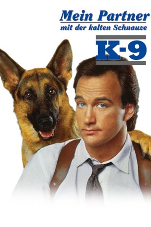

#1000 Mein Partner mit der kalten Schnauze 1 - K-9
Alternativ: K-9
 
 IMDB-Wertung: 6.0 / 10
IMDB-Wertung: 6.0 / 10  Metascore: 44
Metascore: 44 
Chaos-Cop Thomas Dooley vom Rauschgiftdezernat braucht Hilfe. Er steckt mitten in einem 50-Millionen-Dollar-Fall, in dem zu allem Überfluß auch noch die Größen der Stadt verwickelt sind. Mit seinen etwas außergewöhnlichen Arbeitsmethoden hat er sich im Revier allerdings derart in Verruf gebracht, daß kein Kollege bereit ist mit dem "Irren" zusammenzuarbeiten. Aber kein Problem für Dooley: wenn die Menschen nicht wollen, müssen halt die Tiere ran. So kommt Dooley auf den Hund und gerät ausgerechnet an Jerry Lee, den verrücktesten Hund der Polizeistaffel, der seinem neuen Herren in nichts nachsteht. Jerry Lee ist ein Dickkopf sondergleichen, aber er hat die beste Drogennase weit und breit. Dooley verordnet dem etwas streng duftenden Jerry Lee zuerst eine Cabrio-Fahrt durch die Autowaschanlage, dann geht's auf Verbrecherjagd - und das neue Team stellt die Stadt gehörig auf den Kopf...
Jahr: 1989
Dauer: 93 Minuten
FSK: 12
Land: USA Studio: Universal PicturesTonspuren: DD5.1 - ,
Untertitel:
Auflösung: 1080p (1920x1040) Größe: 7485 MB
Genre: Action, Komödie, Krimi
Regisseur: Rod Daniel
Drehbuch: Steven Siegel, Scott Myers
Soundtrack: Miles Goodman
Darsteller:
 James Belushi als Dooley
James Belushi als Dooley- Mel Harris als Tracy
 Kevin Tighe als Lyman
Kevin Tighe als Lyman Ed O'Neill als Brannigan
Ed O'Neill als Brannigan James Handy als Byers
James Handy als Byers- Daniel Davis als Halstead
 Cotter Smith als Gilliam
Cotter Smith als Gilliam John Snyder als Freddie
John Snyder als Freddie Pruitt Taylor Vince als Benny the Mule
Pruitt Taylor Vince als Benny the Mule Sherman Howard als Dillon
Sherman Howard als Dillon Alan Blumenfeld als Rental Salesman
Alan Blumenfeld als Rental Salesman William Sadler als Salesman Don
William Sadler als Salesman Don- Jerry Levine als Ernie
 Dan Castellaneta als Maitre D'
Dan Castellaneta als Maitre D'- Dean Hill als Butler
- Gary Combs als Sculley
- Lucy Butler als Nurse
- Michael Joseph Pierce als Window Shopper , uncredited
- Kelly C. Ryan als Nurse , uncredited
- Rando als Jerry Lee
- Jeff Allin als Chad
- David Haskell als Doctor
- Marjorie Bransfield als Receptionist
- Mark Mooring als Cop
- Rick Cicetti als Waiter
- Wendel Meldrum als Pretty Girl with Dog
- John Castellanos als Man in Rolls Royce
- Colleen Morris als Woman in Rolls Royce
- McKeiver Jones III als Sergeant
- J.W. Smith als Pimp
- Steve Artiaga als Latino Employee
- Vic Cuccia als Security Guard
- Ralph Elias als Officer
Datei: X:\3-Trilogie(G-M)\Mein Partner mit der kalten Schnauze\Mein Partner mit der kalten Schnauze 1 - K-9 (1989, FSK12, 1920x1040).mkv seit 05.05.2015
Festplatte: HD Collection-2(A-Z)-3(A-M)
 Es gibt insgesamt 7 Filme in der Gruppe '3-Trilogie(G-M)\Mein Partner mit der kalten Schnauze'
Es gibt insgesamt 7 Filme in der Gruppe '3-Trilogie(G-M)\Mein Partner mit der kalten Schnauze'